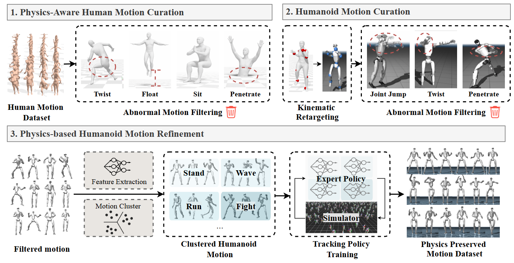
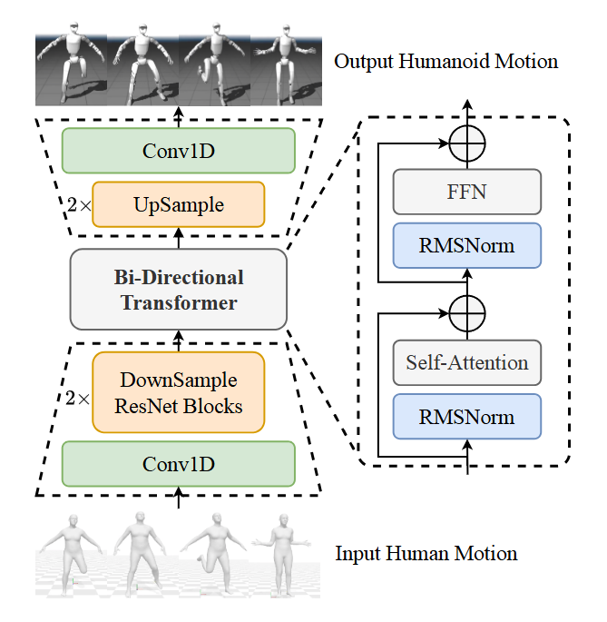

Make Tracking Easy:
Neural Motion Retargeting for Humanoid Whole-body Control

Boosting RL learning with motion reconstructed from video
Faster Converge: Trained for 1000 Iterations with BeyondMimic[1]
Less Error, Better Real-World Performance
Method
Optimization-based methods suffer from local optima and usually sensitive to initial value.
Clustered - Expert Physics Refinement (CEPR).

Network Structure.

PRE-TRAINING:
Kinematic alignment with large-scale data
POST-TRAINING:
Physical grounding with CEPR data
More Results
Floating Feet
Joint Jump
Self Intersection
Reference
- Liao Q, Truong T E, Huang X, et al. Beyondmimic: From motion tracking to versatile humanoid control via guided diffusion[J]. arXiv preprint arXiv:2508.08241, 2025.
- Araujo J P, Ze Y, Xu P, et al. Retargeting matters: General motion retargeting for humanoid motion tracking[J]. arXiv preprint arXiv:2510.02252, 2025.
Citation
@article{zhao2026maketrackingeasy,
title={Make Tracking Easy: Neural Motion Retargeting for Humanoid Whole-body Control},
author={Qingrui Zhao and Yiheng Li and Kaiyue Yang and Xiyu Wang and Shiqi Zhao and Yi Lu and Xinfang Zhang and Qiu Shen and Xiao-Xiao Long and Xun Cao},
journal={arXiv preprint arXiv:2603.22201},
year={2026},
url={https://arxiv.org/abs/2603.22201}
}